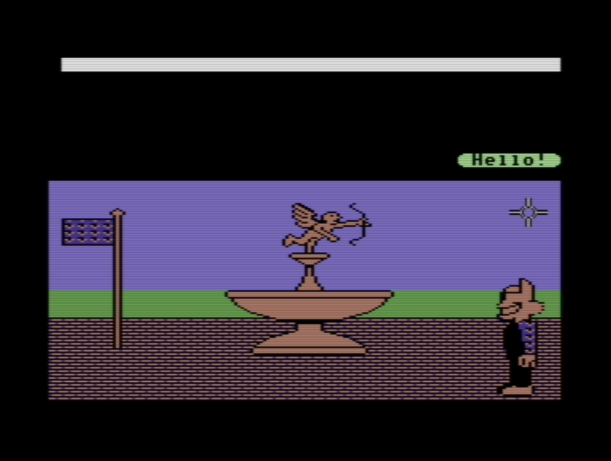

In 1986, Lucasfilm's Habitat became the world's first graphical MMO — thousands of avatars sharing one world through Commodore 64s and 300-baud modems. NeoHabitat is its open-source revival, led by Habitat co-creator F. Randall Farmer and hosted by The MADE. The original world, the original rules, the original art — alive again, and open to everyone.
The genuine 1986 C64 client, running in an emulator in your browser — with the Docent guide at your side. The authentic experience, one click away.
THE CLASSIC ⚡ PLAY ACCELERATEDOur all-JavaScript web client + Docent. Same world, same art, same rules — no emulator in the middle. Fast and crisp.
MODERN 📱 PLAY MOBILEThe web client full-page, sized for phones and tablets. Habitat in your pocket.
ON THE GO
Download a package with the VICE C64 emulator bundled and preconfigured to connect. The classic client on your desktop.
ULTIMATE 64 · ULTIMATE II+ CARTRIDGERun the client natively on Ultimate 64 hardware (or a stock C64 with an Ultimate II/II+ cart) over your home network — HDMI out, no floppies, no modem.
REAL COMMODORE 64Original iron: a C64, a disk drive, and a WiFi userport modem. The full 1986 ritual, floppy swaps included.
The official 1988 Avatar Handbook — everything from GOing and GETting to ghosts, Tokens, and turf.
ALL THE WAYS TO PLAYEvery client, every path, one page — plus the Docent, controls, and where to get help.
Sagebot, our LLM-driven resident · the 3D diorama client · the text-mode client · the Inspector art & region editor · and more.
RUN YOUR OWN SERVERThe whole stack — game server, protocol bridge, web clients, bots — from one docker compose up.
NeoHabitat is built by volunteers — coders, artists, archivists, and historians. Come join us.
Questions? Trouble connecting? Join the NeoHabitat Discord — there's always someone in #troubleshooting.